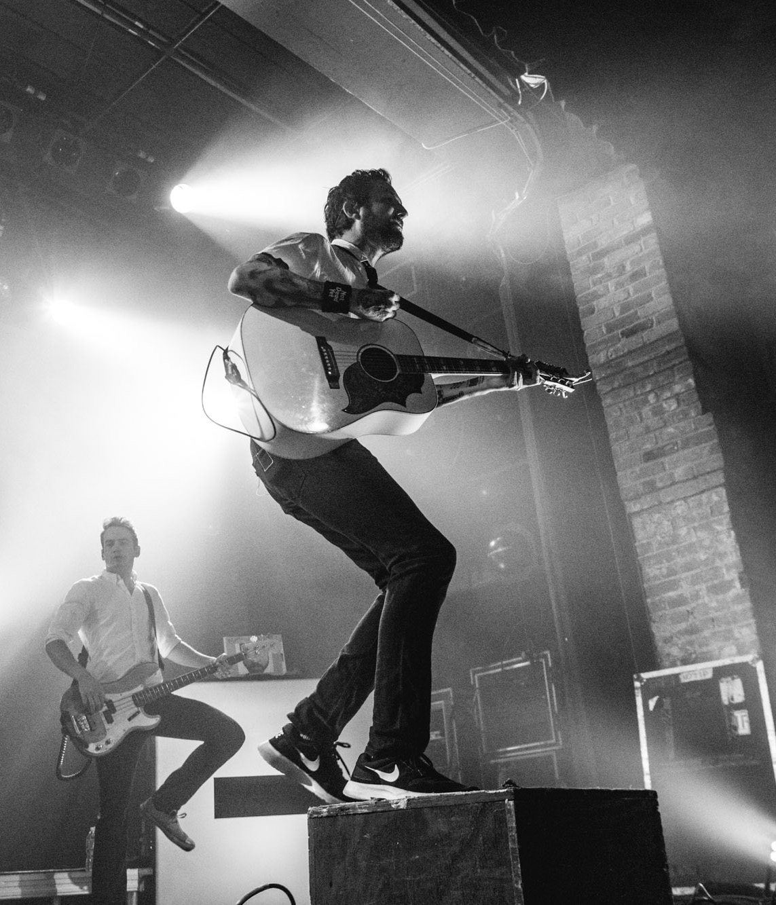

A former member of punk rock band Million Dead, Frank Turner turned his attention to folkier, acoustic music after the demise of the hardcore outfit. He has since transformed himself into a singer and songwriter of consequential folk-punk rebel songs (that cover topics as such atheism, excessive drinking, and the power of rock & roll). Drawing press comparisons to Billy Bragg and Bruce Springsteen, among others, Turner nonetheless occupies a niche of his own in British popular music, and has developed a large international following.
In the studio and during live performances, Turner is accompanied by his backing band, The Sleeping Souls:
- Frank Turner: Guitar and vocals
- Ben Lloyd: Guitar, mandolin
- Tarrant Anderson: Bass
- Matt Nasir: Piano, mandolin
- Nigel Powell: Drums

To date, Turner has released seven solo albums, three rarities compilation albums, one split album and five EPs. Turner's seventh studio album, Be More Kind, was released on 4th May 2018.